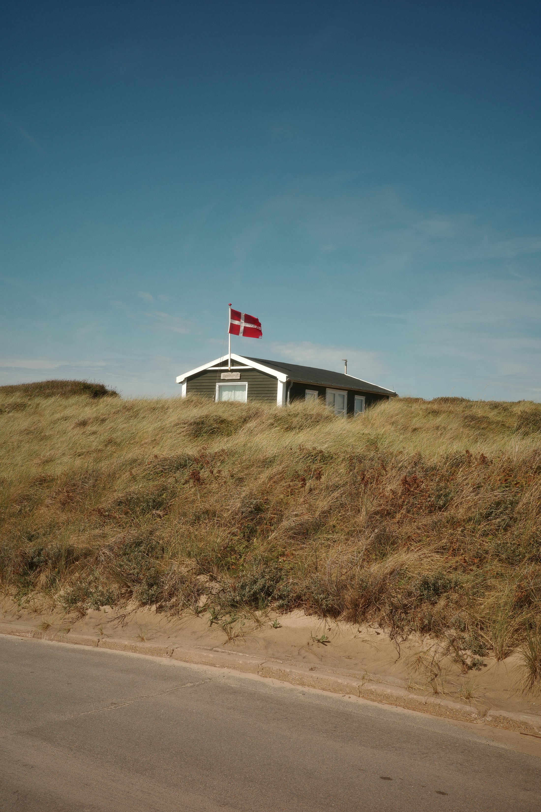
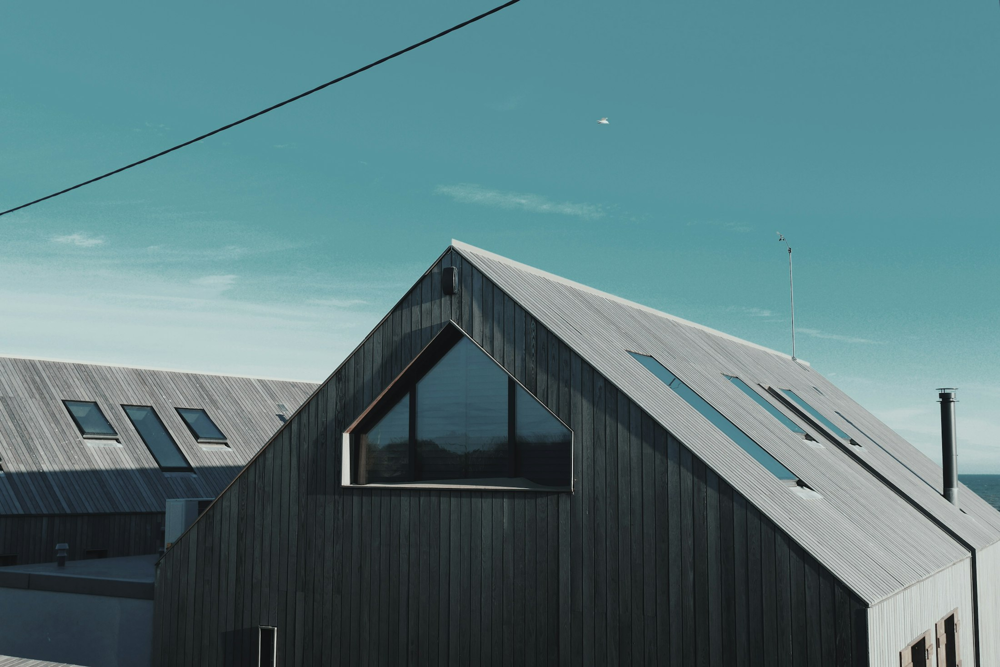
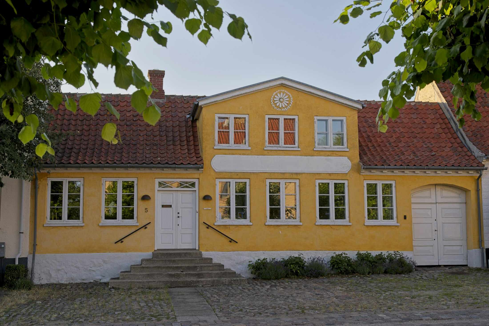

Det hjælper vi med
Hvad vil du bygge?
Vi kender reglerne for hver type byggeri og ved, hvad din kommune vil se.

Tilbygning
Mere plads til familien
Læs mere →
Carport og garage
Også over 50 m²
Læs mere →
Sommerhus og anneks
Regler for sommerhusområder
Læs mere →
Nyt hus
Fra idé til godkendelse
Læs mere →
Lovliggørelse
Når der allerede er bygget
Læs mere →
Ældre huse
Bevaringsværdige og fredede
Læs mere →